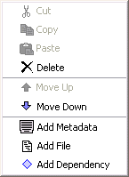

References and Dependency
The RELOAD Editor is essentially a tool for organising and reorganising content and the tools possess many simple features which assist the user in their task.
Finding References
In complex content packages, it can often be hard to match up Items and the resources they reflect. By selecting a given item and right-clicking, a context sensitive menu appears with the option Find Reference at the bottom (see screenshot). Clicking this option will move focus to the relevant resource in the resources tree. When an Item is selected the name of the associated resource also appears in the Attribute Pane. If you wish to reassign a resource to the item, simply click on the Referenced Element attribute and select a new resource from the drop down box which lists all current resources.

Adding Files and Dependencies
Although the RELOAD Editor parses HTML files when adding them to the resources tree, it cannot exhaustively add all dependencies for all resource types. This is especially the case for pages which reference flash movies and java applets where the movie or applet may itself refer to content within compiled code.
In such cases, additional files can be added manually. By selecting a given resource and right-clicking, a context sensitive menu appears with the option Add File towards the bottom (see screenshot). Once selected, a new file icon appears at the appropriate point in the resources tree and the relevant value (a path and filename) can be added in the Attribute Pane below. In addition to single files, a given resource may well depend upon another resource. By selecting a given resource and right-clicking, a context sensitive menu appears with the option Add Dependency at the bottom (see screenshot). Once selected, a new dependency icon appears in the resources tree and the relevant resource can be selected from the drop down list in the Attribute Pane. The Find Reference option can be used to re-find the relevant resource for a given dependency as above.
